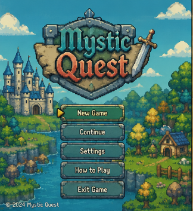
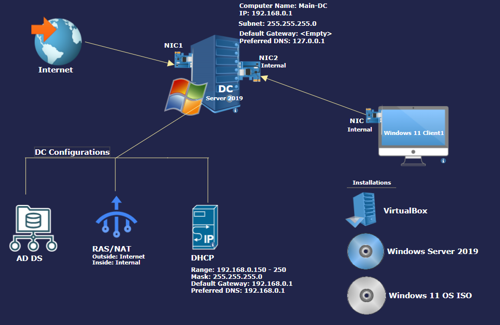

Web Development
Creating page layouts and interactive website features.
IT STUDENT • ALWAYS LEARNING
I’m an Information Technology student building my skills in web development, programming, and useful digital solutions through classwork and project development.
Suietzer Otero
Information Technology Student
01 / ABOUT ME
I’m an IT student who is developing a foundation in programming and website creation. I enjoy learning how technology works and applying what I learn to academic projects.
My current focus is improving my coding, collaboration, and problem-solving skills while creating projects that are useful, understandable, and easy to use.
02 / MY TOOLKIT
These are technologies I have studied or practiced. I’m continuing to strengthen my understanding through hands-on work.
Creating page layouts and interactive website features.
Practicing programming fundamentals and application logic.
Learning how applications store and work with information.
Planning features, organizing tasks, testing, and improving projects.
03 / SELECTED WORK
Academic project concepts and development work. Update the status and links as each project progresses.

An Android mobile application concept with gamified learning activities to support child speech development at home in Barangay Buhisan.
Ask about this project ↗
A game development project that demonstrates programming skills, game mechanics, and interactive gameplay design.
Ask about this project ↗
A server configuration project focused on setting up Active Directory Domain Services (AD DS) and DNS to manage domain users, computers, and network name resolution. Technologies: Windows Server, Active Directory Domain Services, DNS.
Contact me ↗04 / CONTACT
I’m open to learning opportunities, collaboration, and internship-related conversations.
SEND ME A MESSAGE
Replace the sample email below with your professional email address before publishing.
suietzerotero@gmail.com ↗